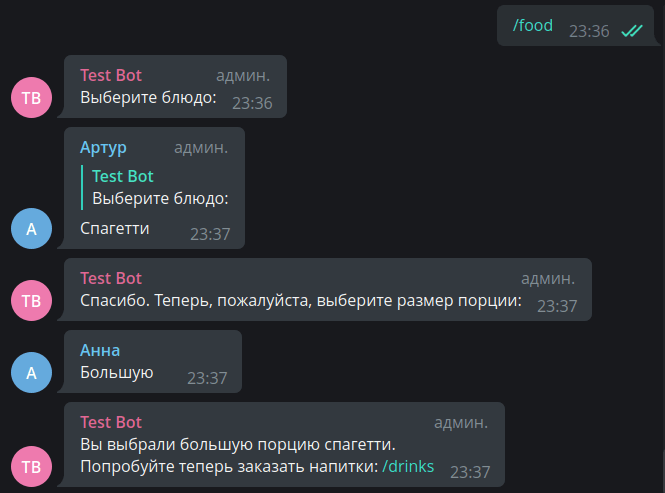

Translation Status 🔄
Конечные автоматы (FSM)¶
Используемая версия aiogram: 3.7.0
Теория¶
В этой главе мы поговорим о ещё одной важной возможности ботов: о системе диалогов. К сожалению, далеко не все
действия в боте можно выполнить за одно сообщение или команду. Предположим, есть бот для знакомств, где при регистрации нужно
указать имя, возраст и отправить фотографию с лицом. Можно, конечно, попросить пользователя отправить фотографию, а в подписи
к ней указать все данные, но это неудобно для обработки и запроса повторного ввода.
Теперь представим пошаговый ввод данных, где в начале бот «включает» режим ожидания определённой информации от конкретного
юзера, далее на каждом этапе проверяет вводимые данные, а по команде /cancel прекращает ожидать очередной шаг и
возвращается в основной режим. Взгляните на схему ниже:

Зелёной стрелкой обозначен процесс перехода по шагам без ошибок, синие стрелки означают сохранение текущего состояния и
ожидание повторного ввода (например, если юзер указал, что ему 250 лет, следует запросить возраст заново), а красные
показывают выход из всего процесса из-за команды /cancel или любой другой, означающей отмену.
Процесс со схемы выше в теории алгоритмов называется конечным автоматом (или FSM — Finite State Machine). Подробнее об этом можно прочесть здесь.
Конструктор диалогов
После того, как попрактикуетесь с FSM в этой главе, вы наверняка ощутите, как много всего придётся сделать, чтобы получить сложноразветвлённую цепочку действий. К счастью, существует библиотека aiogram-dialog от Tishka17, упрощающая работу с машиной состояний.
Практика¶
В механизм конечных автоматов в aiogram уже встроена поддержка различных бэкендов для хранения состояний
между этапами диалога с ботом (впрочем, никто не мешает написать свой), а помимо, собственно, состояний
можно хранить произвольные данные, например, вышеописанные имя и возраст для последующего использования
где-либо. Список имеющихся хранилищ FSM можно найти
в репозитории aiogram,
а в этой главе мы будем пользоваться самым простым бэкендом
MemoryStorage, который
хранит все данные в оперативной памяти. Он идеально подходит для примеров, но не рекомендуется использовать его в реальных
проектах, т.к. MemoryStorage хранит все данные в оперативной памяти без сброса на диск. Также стоит отметить, что конечные
автоматы можно использовать не только с обработчиками сообщений (message_handler, edited_message_handler), но также
с колбэками и инлайн-режимом.
В качестве примера мы напишем имитатор заказа еды и напитков в кафе.
Создание шагов¶
Прежде, чем приступим непосредственно к FSM, опишем по-быстрому простую функцию, которая будет генерировать обычную клавиатуру с кнопками в один ряд, она пригодится нам в дальнейшем:
from aiogram.types import ReplyKeyboardMarkup, KeyboardButton
def make_row_keyboard(items: list[str]) -> ReplyKeyboardMarkup:
"""
Создаёт реплай-клавиатуру с кнопками в один ряд
:param items: список текстов для кнопок
:return: объект реплай-клавиатуры
"""
row = [KeyboardButton(text=item) for item in items]
return ReplyKeyboardMarkup(keyboard=[row], resize_keyboard=True)
Рассмотрим описание шагов для «заказа» еды. Создадим файл handlers/ordering_food.py, где опишем списки блюд и их размеров
(в реальной жизни эта информация может динамически подгружаться из какой-либо БД):
# Эти значения далее будут подставляться в итоговый текст, отсюда
# такая на первый взгляд странная форма прилагательных
available_food_names = ["Суши", "Спагетти", "Хачапури"]
available_food_sizes = ["Маленькую", "Среднюю", "Большую"]
Теперь опишем все возможные «состояния» конкретного процесса (выбор еды). На словах можно описать так: пользователь вызывает
команду /food, бот отвечает сообщением с просьбой выбрать блюдо и встаёт в состояние *ожидает выбор блюда* для конкретного
пользователя. Как только юзер делает выбор, бот, находясь в этом состоянии, проверяет корректность ввода, а затем принимает решение,
запросить ввод повторно (без смены состояния) или перейти к следующему шагу *ожидает выбор размера порции*. Когда пользователь
и здесь вводит корректные данные, бот отображает итоговый результат (содержимое заказа) и сбрасывает состояние. Позднее
в этой главе мы научимся делать принудительный сброс состояния на любом этапе командой /cancel.
Обработка шага 1¶
Итак, перейдём непосредственно к описанию состояний. Для хранения состояний необходимо создать класс, наследующийся
от класса StatesGroup, внутри него нужно создать переменные, присвоив им экземпляры класса State:
Напишем обработчик первого шага, реагирующий на команду /food в случае, если у пользователя не установлен никакой стейт:
from aiogram.filters import Command, StateFilter
from aiogram.fsm.context import FSMContext
@router.message(StateFilter(None), Command("food"))
async def cmd_food(message: Message, state: FSMContext):
await message.answer(
text="Выберите блюдо:",
reply_markup=make_row_keyboard(available_food_names)
)
# Устанавливаем пользователю состояние "выбирает название"
await state.set_state(OrderFood.choosing_food_name)
Чтобы работать с механизмом FSM, в хэндлер необходимо прокинуть аргумент с именем state, который будет иметь
тип FSMContext. А в последней строке мы явно говорим боту встать в состояние choosing_food_name из группы OrderFood.
Отличие от aiogram 2.x
В aiogram 2.x отсутствие фильтра на state означало «только при отсутствии явно выставленного состояния»
(иными словами, state=None). В aiogram 3.x отсутствие фильтра означает «при любом стейте». Напомню, что аналогичный
подход в «тройке» используется с контент-тайпами сообщений.
Далее напишем хэндлер, который ловит один из вариантов блюд из нашего списка:
Рассмотрим подробнее некоторые элементы хэндлера. Фильтры (строки 2-3) сообщают, что нижестоящая функция сработает
тогда и только тогда, когда пользователь будет в состоянии OrderFood.choosing_food_name и текст сообщения будет
совпадать с одним из элементов списка available_food_names. В строке 6 мы пишем данные (текст сообщения)
в хранилище FSM, и эти данные уникальны для пары (chat_id, user_id) (есть нюанс, о нём позже). Наконец,
в строке 11 мы переводим пользователя в состояние OrderFood.choosing_food_size.
А если пользователь решит ввести что-то самостоятельно, без клавиатуры? В этом случае надо сообщить пользователю об ошибке и дать ему ещё попытку. Очень часто начинающие разработчки ботов на этом моменте задают вопрос: «а как оставить юзера в том же состоянии?». Ответ простой: чтобы оставить пользователя в текущем состоянии, достаточно его [состояние] не менять, т.е. буквально ничего не делать.
Напишем дополнительный хэндлер, у которого будет фильтр только на состояние OrderFood.choosing_food_name, а фильтра
на текст не будет. Если расположить его под функцией food_chosen(),
то получится «реагируй в состоянии choosing_food_name, на все тексты, кроме тех, что ловит предыдущий хэндлер»
(иными словами, «лови все неправильные варианты»).
@router.message(OrderFood.choosing_food_name)
async def food_chosen_incorrectly(message: Message):
await message.answer(
text="Я не знаю такого блюда.\n\n"
"Пожалуйста, выберите одно из названий из списка ниже:",
reply_markup=make_row_keyboard(available_food_names)
)
Обработка шага 2¶
Второй и последний этап — обработать ввод размера порции юзером. Аналогично предыдущему этапу сделаем два хэндлера (на верный и неверный ответы), но в первом из них добавим выбор сводной информации о заказе:
@router.message(OrderFood.choosing_food_size, F.text.in_(available_food_sizes))
async def food_size_chosen(message: Message, state: FSMContext):
user_data = await state.get_data()
await message.answer(
text=f"Вы выбрали {message.text.lower()} порцию {user_data['chosen_food']}.\n"
f"Попробуйте теперь заказать напитки: /drinks",
reply_markup=ReplyKeyboardRemove()
)
await state.clear()
@router.message(OrderFood.choosing_food_size)
async def food_size_chosen_incorrectly(message: Message):
await message.answer(
text="Я не знаю такого размера порции.\n\n"
"Пожалуйста, выберите один из вариантов из списка ниже:",
reply_markup=make_row_keyboard(available_food_sizes)
)
Вызов get_data() в строке №3 возвращает объект хранилища для конкретного пользователя в конкретном чате. Из него
[хранилища] мы достаём сохранённое значение название блюда и подставляем в сообщение. Метод clear() у стейта
возвращает пользователя в «пустое» состояние и удаляет все сохранённые данные. Что делать, если нужно только очистить
состояние или только затереть данные? Для этого провалимся в определение функции clear() в исходниках aiogram 3.x:
class FSMContext:
# Часть кода пропущена
async def clear(self) -> None:
await self.set_state(state=None)
await self.set_data({})
Теперь вы знаете, как очистить что-то одно :)
Шаги для выбора напитков делаются совершенно аналогично. Попробуйте сделать самостоятельно или загляните в исходные тексты к этой главе.
Полный текст файла с хэндлерами для заказа еды:
from aiogram import Router, F
from aiogram.filters import Command, StateFilter
from aiogram.fsm.context import FSMContext
from aiogram.fsm.state import StatesGroup, State
from aiogram.types import Message, ReplyKeyboardRemove
from keyboards.simple_row import make_row_keyboard
router = Router()
# Эти значения далее будут подставляться в итоговый текст, отсюда
# такая на первый взгляд странная форма прилагательных
available_food_names = ["Суши", "Спагетти", "Хачапури"]
available_food_sizes = ["Маленькую", "Среднюю", "Большую"]
class OrderFood(StatesGroup):
choosing_food_name = State()
choosing_food_size = State()
@router.message(Command("food"))
async def cmd_food(message: Message, state: FSMContext):
await message.answer(
text="Выберите блюдо:",
reply_markup=make_row_keyboard(available_food_names)
)
# Устанавливаем пользователю состояние "выбирает название"
await state.set_state(OrderFood.choosing_food_name)
# Этап выбора блюда #
@router.message(OrderFood.choosing_food_name, F.text.in_(available_food_names))
async def food_chosen(message: Message, state: FSMContext):
await state.update_data(chosen_food=message.text.lower())
await message.answer(
text="Спасибо. Теперь, пожалуйста, выберите размер порции:",
reply_markup=make_row_keyboard(available_food_sizes)
)
await state.set_state(OrderFood.choosing_food_size)
# В целом, никто не мешает указывать стейты полностью строками
# Это может пригодиться, если по какой-то причине
# ваши названия стейтов генерируются в рантайме (но зачем?)
@router.message(StateFilter("OrderFood:choosing_food_name"))
async def food_chosen_incorrectly(message: Message):
await message.answer(
text="Я не знаю такого блюда.\n\n"
"Пожалуйста, выберите одно из названий из списка ниже:",
reply_markup=make_row_keyboard(available_food_names)
)
# Этап выбора размера порции и отображение сводной информации #
@router.message(OrderFood.choosing_food_size, F.text.in_(available_food_sizes))
async def food_size_chosen(message: Message, state: FSMContext):
user_data = await state.get_data()
await message.answer(
text=f"Вы выбрали {message.text.lower()} порцию {user_data['chosen_food']}.\n"
f"Попробуйте теперь заказать напитки: /drinks",
reply_markup=ReplyKeyboardRemove()
)
# Сброс состояния и сохранённых данных у пользователя
await state.clear()
@router.message(OrderFood.choosing_food_size)
async def food_size_chosen_incorrectly(message: Message):
await message.answer(
text="Я не знаю такого размера порции.\n\n"
"Пожалуйста, выберите один из вариантов из списка ниже:",
reply_markup=make_row_keyboard(available_food_sizes)
)
Общие команды¶
Раз уж заговорили о сбросе состояний, давайте в файле handlers/common.py реализуем обработчики команды /start и
действия «отмены». В первом случае должен показываться некий приветственный/справочный текст, а для отмены напишем
два хэндлера: когда пользователь не находится ни в каком стейте, и когда находится в каком-либо.
Все функции гарантируют отсутствие состояние и данных, убирают обычную клавиатуру, если вдруг она есть:
from aiogram import F, Router
from aiogram.filters import Command
from aiogram.filters import StateFilter
from aiogram.fsm.context import FSMContext
from aiogram.fsm.state import default_state
from aiogram.types import Message, ReplyKeyboardRemove
router = Router()
@router.message(Command(commands=["start"]))
async def cmd_start(message: Message, state: FSMContext):
await state.clear()
await message.answer(
text="Выберите, что хотите заказать: "
"блюда (/food) или напитки (/drinks).",
reply_markup=ReplyKeyboardRemove()
)
# Нетрудно догадаться, что следующие два хэндлера можно
# спокойно объединить в один, но для полноты картины оставим так
# default_state - это то же самое, что и StateFilter(None)
@router.message(StateFilter(None), Command(commands=["cancel"]))
@router.message(default_state, F.text.lower() == "отмена")
async def cmd_cancel_no_state(message: Message, state: FSMContext):
# Стейт сбрасывать не нужно, удалим только данные
await state.set_data({})
await message.answer(
text="Нечего отменять",
reply_markup=ReplyKeyboardRemove()
)
@router.message(Command(commands=["cancel"]))
@router.message(F.text.lower() == "отмена")
async def cmd_cancel(message: Message, state: FSMContext):
await state.clear()
await message.answer(
text="Действие отменено",
reply_markup=ReplyKeyboardRemove()
)
Файл bot.py¶
Напоследок рассмотрим точку входа — файл bot.py со всеми импортами и подключенными роутерами:
import asyncio
import logging
from aiogram import Bot, Dispatcher
from aiogram.fsm.storage.memory import MemoryStorage
# файл config_reader.py можно взять из репозитория
# пример — в первой главе
from config_reader import config
from handlers import common, ordering_food
async def main():
logging.basicConfig(
level=logging.INFO,
format="%(asctime)s - %(levelname)s - %(name)s - %(message)s",
)
# Если не указать storage, то по умолчанию всё равно будет MemoryStorage
# Но явное лучше неявного =]
dp = Dispatcher(storage=MemoryStorage())
bot = Bot(config.bot_token.get_secret_value())
dp.include_router(common.router)
dp.include_router(ordering_food.router)
# сюда импортируйте ваш собственный роутер для напитков
await dp.start_polling(bot)
if __name__ == '__main__':
asyncio.run(main())
Различные стратегии FSM¶
Aiogram 3.x привнёс необычное, но интересное нововведение в механизм конечных автоматов — стратегии FSM. Они позволяют переопределить логику формирования пар для стейтов и данных. Всего стратегий четыре, вот они:
- USER_IN_CHAT — стратегия по умолчанию. Стейт и данные разные у каждого юзера в каждом чате. То есть, у юзера будут разные состояния и данные в разных группах, а также в ЛС с ботом.
- CHAT — стейт и данные общие для всего чата целиком. В ЛС разница незаметна, но в группе у всех участников будет один стейт и общие данные.
- GLOBAL_USER — во всех чатах у одного и того же юзера будет один и тот же стейт и данные.
- USER_IN_TOPIC — у юзера могут быть разные стейты в зависимости от топика в супергруппе-форуме.
Честно говоря, я не могу придумать хороший use-case для GLOBAL_USER, однако CHAT может пригодиться для ботов, которые реализуют различные игры в группах. Если вы знаете интересные применения, пожалуйста, расскажите о них в нашем чатике!
В качестве примера рассмотрим ситуацию, когда бот для заказа еды почему-то оказался в группе и имеет стратегию CHAT.
А чтобы это случилось, необходимо внести небольшие правки в файл bot.py:
# новый импорт
from aiogram.fsm.strategy import FSMStrategy
async def main():
# тут код
dp = Dispatcher(storage=MemoryStorage(), fsm_strategy=FSMStrategy.CHAT)
# тут тоже код
После запуска бота попросим людей в группе повзаимодействовать с ним:

Выглядит странно, не правда ли?
Теперь, вооружившись знаниями о конечных автоматах, вы можете безбоязненно писать ботов с системой диалогов.